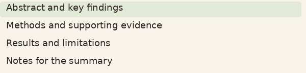

Larch
Fast, private AI on the computer you already own. Larch runs open models on your Mac or PC, with a desktop app, an agent and a local API.
Open source on Thanksgiving, 26 November.
Larch on your computer

Ask your own documents.
Attach a file and ask about your own situation: here, an IRS guide on Roth IRAs. Larch reads it on this computer and writes the answer live. Parts sped up, waits trimmed.
What it does
Several chats at once
One engine batches every open chat on the GPU, so a second chat, or the agent, doesn't wait in line behind the first.
Answers that cite the line
Ask about a long PDF and Larch quotes the line it used, with the page, so you can check it. The file stays loaded, so a follow-up doesn't read it all again.
Stays on your computer
The model runs on your own machine, and your chats and files stay on its disk. Larch only goes online when you download a model or use a tool that needs the web. It sends no usage data or analytics.
A local API
larch serve starts a server on your own machine that speaks the OpenAI and Anthropic APIs. Many SDKs and tools work once you point their base URL at it.
It loads GGUF files of Llama 3.x, Mistral, Qwen 2.5, Qwen 3 and Qwen 3.5, dense and mixture-of-experts.
$ larch serve -m qwen3-8b-q4_k_m.gguf # listens on 127.0.0.1:8080 $ curl 127.0.0.1:8080/v1/chat/completions \ -d '{"messages": [{"role": "user", "content": "hi"}]}' $ curl 127.0.0.1:8080/v1/messages \ -d '{"max_tokens": 256, "messages": [{"role": "user", "content": "hi"}]}'
What it runs on
Open source on Thanksgiving
Larch goes open source on Thursday 26 November, under the Apache 2.0 licence. That day the code, the installer and the docs go up on GitHub, and this page gets the install command.